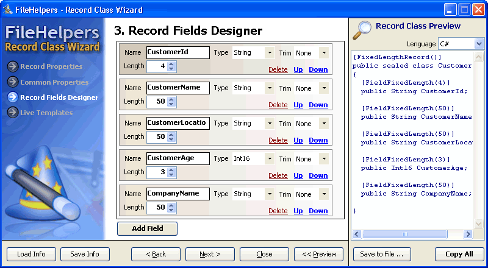

From version 1.3.5, the library has a record class wizard to generate the record
class.
It's easy to use, but in the next version I'll add an step by step guide and maybe a screen
recording video.
Added in 1.4.0 the
Fireball CodeEditor an excellent syntax coloring and editor control.
Click here or in the image to see a demo movie

{$FOOTER$}